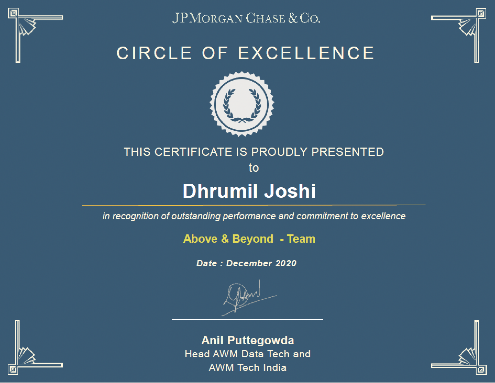

Education
B. Tech in Computer Engineering
Sardar Vallabhbhai National Institute of Technology, SuratCGPA - 8.54/10
Courses: Artificial Intelligence and Machine Learning, Cloud Computing, Computer Graphics, Computer Networks, Computer Organization, Cryptography and Network Security, Data Science, Data Structures and Algorithms, Data Warehousing and Mining, Database Management Systems, Design and Analysis of Algorithms, Distributed Algorithms, Economics and Business Management, Information Security, Internet Technology and Applications, Microprocessor and Interfacing Techniques, Network and System Security, Operating Systems, Principles of Programming Language, Software Engineering, System Software (Compiler Design), Theoretical Computer Science ( Theory of Computation)
Higher Secondary Certificate Examination Grade(12th) Physics, Chemistry, Mathematics
St. Kabir School, VadodaraGrade: 99.48 Percentile
Secured first position in 12th Science for the academic year 2014-15 in School
Experience
SDE II | Wealth Management Technology
J.P. Morgan Chase & Co.- Currently working on integrating mission‐critical microservices through the Choreography‐based Saga pattern to ensure data consistency in a loosely coupled distributed system
- Involved in the migration of extensive object data in the blob format from the relational database to Amazon S3 Object Storage
- Strengthened and enhanced the support model of the team by implementing a micro service that runs Cypress Automation Test scripts on every micro service of the stack, mines splunk for error logs , collects other useful metrics for application monitoring, creating a dependency graph to detect cyclic dependencies
- The support service generates a report of the above calculated statistics and sends an automated mail at a scheduled time to the support team every day for quick action and troubleshooting
SDE I | Wealth Management Technology
J.P. Morgan Chase & Co.- Involved in major architectural redesign making a shift from legacy infrastructure (with Monolithic Centralized and Physical Server-based design) to Event-Driven Microservice-based Distributed, asynchronous and cloud-hosted Infrastructure
- Redesigned and developed Data Models, APIs and services of applications to fit the new architecture
- Wrote data migration tasks to migrate data from Ms SQL DB to Oracle DB with major Schema and Model changes
- Implemented a common plugin on top of the Apache Kafka Framework which was injected into all the data streaming microservices that performed data replication from Oracle to Elasticsearch via eventing
- Created dashboards using Grafana to leverage metrics from various data sources for analytics of attributes contributing to performance
SDE Intern | Asset Management Technology
J.P. Morgan Chase & Co.- Planned, implemented , developed and deployed a production ready Health Tracker Web App that monitors various metrics of other business critical applications , servers and segregates them on to a dashboard for robust observation
- Implemented functionalities such as showing queue depth of IBM messaging queue and having an alerting mechanism based on threshold depth, mining Splunk logs for Errors and Exceptions based on threshold, integration with Dynatrace to show application performance based on configurable metrics
- Wrote scripts for deployment of application to organization's private cloud
Skills
Problem Solving
Backend Development
Data Structures & Algorithms
Object Oriented Programming
Cloud Computing
Distributed & Parallel Systems
Microservice Architecture
Reactive/Asynchronous Server-Side Programming
Domain Driven Design
Full Stack Software Development
Linear Algebra
Databases & OS
Big Data Technologies
Natural Language Processing
Data Visualization
Google Data Analytics
Tools, Technologies and Programming Languages
Spring Boot, Kafka, Spring Cloud, Pivotal Cloud Foundry, AWS, Spring WebFlux, Tensorflow, Flask, Ionic, Splunk, Jenkins, Spring Cloud Netflix, Spring Cloud Data Flow, Postman, Cypress, UiPath, JMeter, Intellij, PyCharm, Java, Python, C/C++, C\#, JavaScript/TypeScript, HTML, R, SQL, NoSQL, MySQL, MsSQL, PostgreSQL, Oracle, Elasticsearch, MongoDB, Amazon Redshift, MariaDB ColumnStore, Amazon S3, AWS, Pivotal Cloud Foundry, OpenStack, DigitalOceanAwards
Circle of Excellence Award (Above and Beyond)
J.P. Morgan Chase & Co.Award in recognition of outstanding performance and commitment to excellence
MMNCT Cricket Tournament - Gold Medal
Sardar Vallabhbhai National Institute of Technology, SuratCaptained the team Spartans for InterYear cricket tournament and won a gold medal
All India Inter-NIT Cricket Tournament - Silver Medal
National Institute of Technology, RourkelaExcelled my team to the finals of a tournament comprising of 28+ NITs and won a Silver Medal<
Academic Excellence Award - Gold Medal
St. Kabir School, Vadodara, GujaratSecured 1st position in 12th Science (All Streams) and got listed in board toppers list of my school